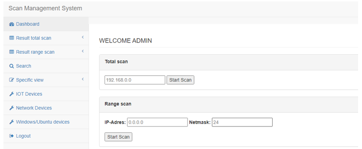

Stage
Binnen de opleiding Cloud and Cyber Security kregen wij de kans om een leerrijke stage te volgen. Ik heb deze stage gevolgd bij het leuke bedrijf Eurofins Digital Testing in Hasselt. Hier heb ik heel veel geleerd en vooral mogen samenwerken met veel enthousiaste mensen. Eurofins Digital Testing is een gevestigde waarde binnen de IT wereld voor het testen van alles wat met informatica te maken heeft. Zowel hardware als software. Ik zelf heb me bezig gehouden met het schrijven van een test programma.
IOT device network scanner
Ik heb me tijdens mijn stage actief bezig gehouden met het schrijven van een test applicatie voor Eurofins. Ze hadden nood aan een applicatie die het netwerk scant op IOT toestellen en ook de status weergeeft. hierbij moesten ook de poorten zichtbaar gemaakt worden die beschikbaar waren op bepaalde toestellen binnen het gescande netwerk. Hieruit zou dan een duidelijk overzicht komen van duidelijke gevaren binnen het netwerk. Met andere woorden toestellen die beter zouden kunnen beveiligd worden of onnodige services actief hebben.
Onze focus lag hierbij op het vinden van IOT toestellen. IOT toestellen zijn meestal kleine toestellen die je dagelijks leven eenvoudiger maken, denk hierbij aan slimme thermostaten of slimme licht schakelaars. Deze toestellen vinden we de laatste jaren meer en meer terug binnen zowel bedrijfsnetwerken als thuisnetwerken. Waarom nu juist de focus op deze toestellen? Dit soort toestellen brengen meestal ook grote risico's mee. Omdat ze op afstand bedienbaar zijn kan iemand die daar geen toestemming voor heeft toch proberen deze toestellen te bedienen of zich een weg banen in het netwerk via deze toestellen. Dit is de reden waarom dat je zeker moet opletten bij het installeren van deze toestellen.
